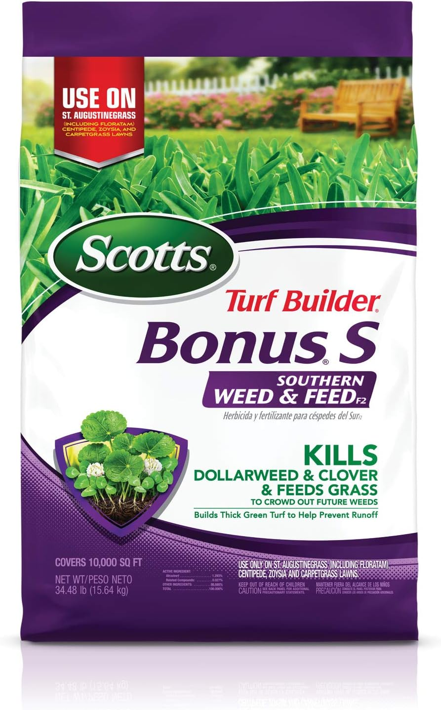

The Problem With That Aisle
You've been there. You walk in needing something for your lawn, and you end up standing in front of a wall of bags — Scotts, Spectracide, Ortho, Pennington — each one claiming to be the best thing that ever happened to grass. Some are weed killers. Some are fertilizers. Some are both. Half of them have "Southern" in the name, a few say "St. Augustine Safe," and then there's a whole other section for liquids. You pick up one bag, read the back, put it down, pick up another.
Twenty minutes later you're either leaving with the wrong thing, or you're calling your wife to ask her what kind of grass you even have.
That was me. Except I didn't even know to ask about the grass type.
First Home, First Lawn — I Knew Nothing
Lived in apartments and rentals most of my adult life. When we bought our first single-family home here in Plantation, the backyard and the lawn came with it — and to be fair, calling it a lawn was generous. I couldn't see much grass. Mostly weeds, patches of bare dirt, and whatever that purple-flowering thing was taking over the edges. I found out later the grass underneath was St. Augustine — specifically Floratam, the most common variety you'll see in South Florida neighborhoods.
South Florida is a different game from anywhere I'd lived before. The heat is relentless, the rainy season dumps water on everything from June through October, and the weeds — especially in the first year — will take over before you realize they're there.
"When I closed on the house, I inherited what looked like a lawn. By month three, I was pretty sure I'd inherited a weed farm with some grass in it."


I spent that first summer Googling things like "why is my grass turning yellow" and "how to get rid of the purple flowering weeds in St. Augustine lawn" — which, by the way, are dollar weed and chamberbitter, and they will absolutely take over if you let them. I tried a couple of random products from the aisle with no real system. Some helped. Most didn't do much. I was applying things at the wrong time, in the wrong amounts, not watering in the granules. Classic beginner stuff.
What finally worked was narrowing it down to four products and actually understanding what each one does. Here's the breakdown.
The Four Products — and Why These, Not Everything Else
Walk into any home improvement store in South Florida and you'll see maybe 40 different products aimed at St. Augustine lawns. Most of them overlap. You don't need 40. You need two granular applications per year for the base program, one liquid weed preventer for the summer, and one spot-treatment spray for the weeds that get through anyway. That's it.

Scotts Turf Builder Bonus S Southern Weed & Feed
This is the workhorse of the program — a 2-in-1 granular that fertilizes your lawn and kills broadleaf weeds at the same time. It's specifically formulated for St. Augustine (Floratam), Centipede, Zoysia, and Bahia. The "Bonus S" refers to atrazine, the active herbicide, which is cleared for St. Augustine use — a lot of other weed killers will damage it. Apply it when your grass is wet (early morning dew works) so the granules stick to the weed leaves. Then water it in within 24 hours.
Key rule: Scotts caps this at 2 applications per year. Don't push it.
🛒 Find on Amazon
Scotts Turf Builder Southern Lawn Food
When you don't need the weed control — either because you already used your two Bonus S applications or the weeds are under control — this is your pure fertilizer. It's designed for Southern grass types and uses a slow-release nitrogen formula that feeds for up to 8 weeks. It won't burn St. Augustine the way quick-release fertilizers can in our South Florida heat. I use this to fill the gap between Bonus S applications, particularly in early summer before the rainy season really kicks in.
🛒 Find on Amazon
Spectracide Weed Stop for Lawns — St. Augustine & Centipede Safe
This is the liquid option when weeds are already showing or when you want broader coverage than spot-spraying allows. The key is the "St. Augustine Safe" label — not every Spectracide product is. The formula is ready-to-spray via a hose-end attachment, and it hits a wide range of broadleaf weeds and some grassy weeds. I use this mid-summer when dollar weed starts pushing back and I've already hit my Bonus S limit for the year. Cover the whole lawn, let it dry, and don't water for 24 hours.
🛒 Find on Amazon
Ortho Weed B Gon — Chickweed, Clover & Oxalis Killer for Lawns
Your spot-treatment weapon. When a clump of weeds shows up in the middle of the yard and you don't want to spray the whole lawn, Ortho Weed B Gon is what you reach for. It's concentrated, works fast — usually within 24 to 48 hours you'll see the weeds start wilting — and it's labeled safe for St. Augustine grass. Don't spray it if rain is expected within a few hours, and don't mow right after applying. Give it a couple days to do its job.
🛒 Find on AmazonThe Schedule I Actually Use
South Florida has a long growing season — St. Augustine doesn't really go dormant here the way it does in colder climates up north. That's good news because your lawn can look green most of the year. The flip side is it's also growing enough to need regular feeding and weed pressure management from spring through early fall.
One thing to know before you start: Broward County has a fertilizer ordinance that restricts nitrogen applications during the wet season (June 1 – September 30). Products with slow-release nitrogen (75%+ slow-release) are generally exempt — the Scotts products qualify. Always check your bag label and your county's current rules before you apply. When in doubt, call the Broward County Extension office.
| When | Product | Type | What You're Doing |
|---|---|---|---|
| April | Scotts Bonus S | Weed & Feed | First application of the year. Lawn is actively growing again, weeds are waking up. Feed + kill in one shot. Apply to wet grass, water in within 24 hrs. |
| Early June (before June 1 if possible) |
Scotts Turf Builder Southern | Fertilizer | Fuel the lawn heading into rainy season. No weed killer this round — you're building density so weeds have less room. Slow-release formula feeds through the summer heat. |
| July–August (as needed) |
Spectracide Weed Stop or Ortho Weed B Gon |
Weed Spray Spot Treat | Rainy season brings dollar weed, sedge, and other opportunists. Spectracide covers the whole lawn; Ortho for isolated patches. Don't water for 24 hours after. |
| September (late, after rains slow) |
Scotts Bonus S | Weed & Feed | Second and final Bonus S of the year. Clean up any remaining broadleaf weeds and give the lawn a last feed before growth slows. This sets you up for a strong spring. |
| Year-round (reactive) |
Ortho Weed B Gon | Spot Treat | Keep it in the garage. Any time a weed patch shows up between applications, hit it directly. Don't let weeds establish — that's how you lose ground. |
Application Tips That Took Me Too Long to Learn
Get a good broadcast spreader — and skip the learning curve I had. My first approach was spreading granules by hand with gloves. It worked, technically, but the coverage was uneven and my hands reeked of fertilizer for days. Then I picked up the Scotts Wizz — a handheld battery-powered spreader that looked convenient. It wasn't. The spread pattern was inconsistent, it went through batteries fast, and I wouldn't recommend it. What I eventually landed on — and still use today — is the Scotts Turf Builder EdgeGuard Mini Broadcast Spreader. It's precise, the EdgeGuard keeps product off your driveway and beds, it folds up flat for storage, and it handles a standard bag comfortably. About $35–40. Worth every dollar compared to the alternatives I tried first.

Scotts Turf Builder EdgeGuard Mini Broadcast Spreader
The one I landed on after going through hand-spreading and the Wizz. The EdgeGuard feature is genuinely useful — it closes off one side of the spread pattern so you don't throw fertilizer onto your driveway, sidewalk, or flower beds. Folds flat, easy to calibrate, handles a full bag without jamming. Set the dial to whatever the fertilizer bag specifies and go.
🛒 Find on AmazonApply Bonus S to a wet lawn. The granules need to stick to the weed leaves to be effective as a herbicide. Apply in the early morning when there's dew, or water lightly first, then spread. Follow up with a deeper watering within 24 hours to push the fertilizer down to the roots.
Don't apply in full midday heat. South Florida summers get well above 90°F by noon. Fertilizer applied in peak heat on stressed grass can burn. Early morning or late afternoon is the window.
Mow before you apply, not after. Give your lawn a fresh cut a day or two before spreading. This removes the thatch layer that can block granules from reaching the soil, and you won't be mowing off freshly applied product.
Don't apply liquid weed killers right before rain. Spectracide and Ortho both need several hours to absorb into the weed before rain washes them off. Check the forecast. If there's a thunderstorm coming — and in South Florida there almost always is between June and September — wait a day.

Where I Am Now
A few years into owning this house, I'm proud of what that backyard looks like now. Neighbors have noticed. The before and after isn't just about looks — it's about understanding that St. Augustine grass in South Florida has specific needs and a specific schedule, and once you stop guessing and start following a system, the lawn pretty much takes care of itself between applications.
Two granular applications a year. One liquid for the summer. A spot spray when things get through. That's the whole playbook. And to be real with you — I've missed an application day by a week, sometimes more. Life happens. It's fine. You're not running a sprint. Lawn care is a marathon, and consistency over the seasons matters a lot more than hitting every date perfectly. The lawn forgives a little delay. It doesn't forgive being ignored for a whole season.
You don't need to stand in that aisle reading every bag. Go straight for these four, follow the schedule above, and you'll be fine.
If you're just moving to South Florida — or just bought your first house and inherited a lawn you have no idea what to do with — I get it. I've been exactly there. Start with Bonus S in April, and go from there.
This article contains affiliate links. If you buy through them, I may earn a small commission at no extra cost to you. I only recommend products I actually use on my own lawn in Plantation.